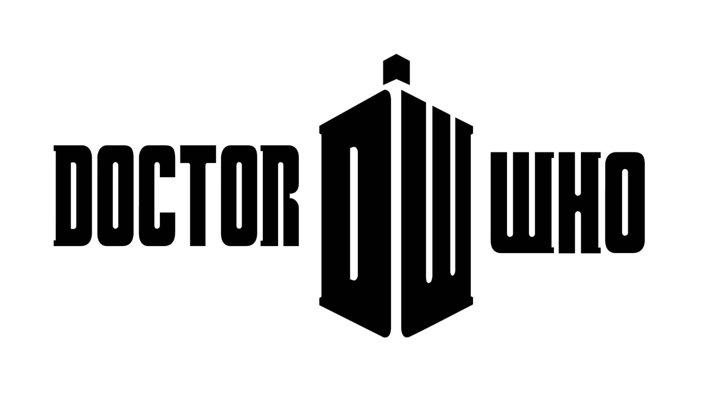

Doctor Who is a British science fiction television series broadcast by the BBC since 1963. The series depicts the adventures of a Time Lord called the Doctor, an extraterrestrial being who appears to be human, that explores the universe in a time-travelling space ship called the TARDIS.